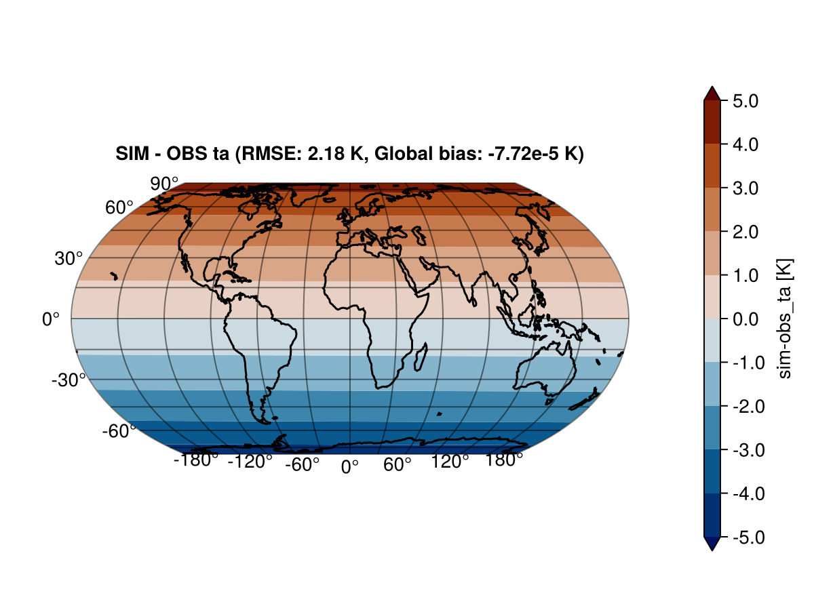
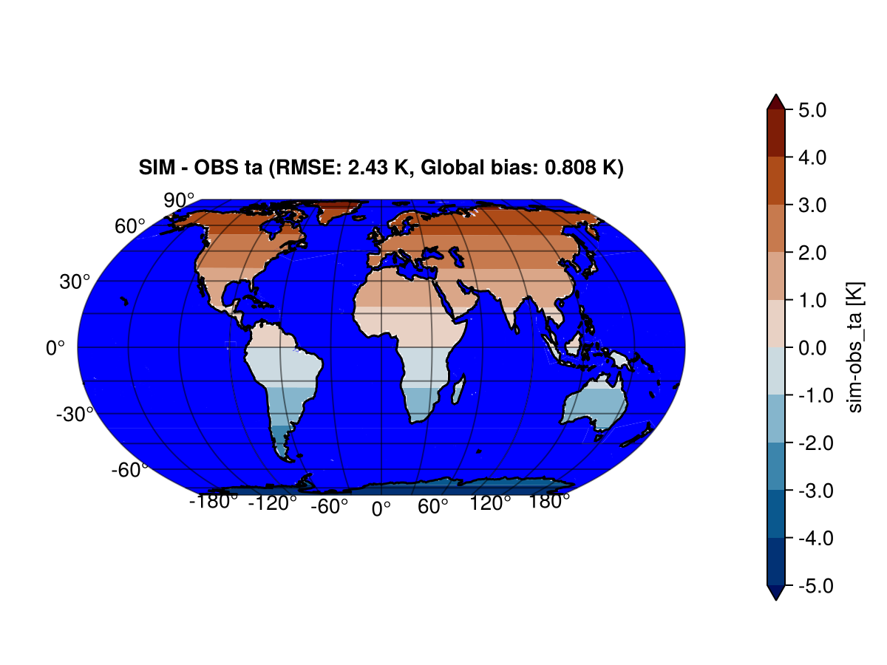
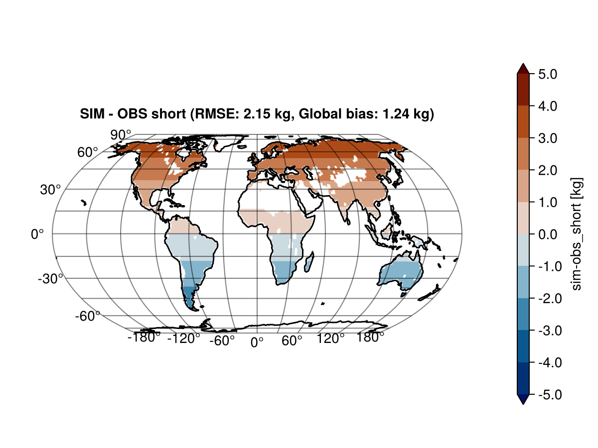

Visualizing OutputVars
This page is under construction, in the meantime, consult Visualize.
Masking part of the output in GeoMakie
When performing ocean or land simulations, it is often convenient to hide the other component (e.g., hide the ocean and focus on the continents). For GeoMakie plots, there is a direct way to accomplish this. In this section, we discuss this feature.
The main GeoMakie plots are Visualize.contour2D_on_globe! and Visualize.heatmap2D_on_globe!. Both these functions take a mask argument. By default, mask is nothing, meaning that the entire output is displayed on the globe. Alternatively, mask can be a collection of polygons that can be plotted with Makie.poly. ClimaAnalysis comes with the most important ones Visualize.oceanmask and Visualize.landmask, to hide ocean and continents respectively.
For example, suppose var it the variable we want to plot with a ocean mask
import ClimaAnalysis.Visualize: contour2D_on_globe!, oceanmask
import ClimaAnalysis.Utils: kwargs as ca_kwargs
import GeoMakie
import CairoMakie
fig = CairoMakie.Figure()
contour2D_on_globe!(fig,
var,
mask = oceanmask(),
more_kwargs = Dict(:mask => ca_kwargs(color = :blue)),
)
CairoMakie.save("myfigure.pdf", fig)In this example, we plotted var on the globe and overplotted a blue ocean. ca_kwargs (Utils.kwargs) is a convenience function to pass keyword arguments more easily.
The output might look something like:

Plotting bias
After computing the bias between observational and simulation data, you may want to plot the bias and display information such as the root mean squared error (RMSE) and the global bias in the plot. To do this, you use the function plot_bias_on_globe!(fig, sim, obs). In the example below, we plot the bias between our simulation and some observations stored in ta_1d_average.nc.
import ClimaAnalysis
import ClimaAnalysis.Visualize: plot_bias_on_globe!
import GeoMakie
import CairoMakie
obs_var = ClimaAnalysis.OutputVar("ta_1d_average.nc")
sim_var = ClimaAnalysis.get(ClimaAnalysis.simdir("simulation_output"), "ta")
fig = CairoMakie.Figure()
plot_bias_on_globe!(fig, sim_var, obs_var)
CairoMakie.save("myfigure.pdf", fig)The output produces something like:

We can also plot the bias using an ocean mask. This also means we compute the bias only over land.
import ClimaAnalysis
import ClimaAnalysis.Visualize: plot_bias_on_globe!, oceanmask
import GeoMakie
import CairoMakie
obs_var = ClimaAnalysis.OutputVar("ta_1d_average.nc")
sim_var = ClimaAnalysis.get(ClimaAnalysis.simdir("simulation_output"), "ta")
fig = CairoMakie.Figure()
plot_bias_on_globe!(fig,
var,
mask = oceanmask(),
more_kwargs = Dict(:mask => ca_kwargs(color = :blue)),
)
CairoMakie.save("myfigure.pdf", fig)The output produces something like:

We can also plot the bias using a custom mask generated from make_lonlat_mask.
ClimaAnalysis do not support mask keyword arguments for masking functions. If you want the values of the mask to not show in a plot, then pass true_val = NaN as a keyword argument to make_lonlat_mask. The color of NaN is controlled by the keyword nan_color which can be passed for the plotting function (:plot).
Note that if the backend is CairoMakie, then the keyword nan_color does nothing. See this issue.
import ClimaAnalysis
import ClimaAnalysis.Visualize: plot_bias_on_globe!, oceanmask
import GeoMakie
import CairoMakie
mask_var = ClimaAnalysis.OutputVar("ocean_mask.nc")
mask_fn = ClimaAnalysis.generate_lonlat_mask(mask_var, NaN, 1.0)
obs_var = ClimaAnalysis.OutputVar("ta_1d_average.nc")
sim_var = ClimaAnalysis.get(ClimaAnalysis.simdir("simulation_output"), "ta")
fig = CairoMakie.Figure()
plot_bias_on_globe!(fig, var, mask = mask_fn)
CairoMakie.save("myfigure.pdf", fig)The output produces something like:
